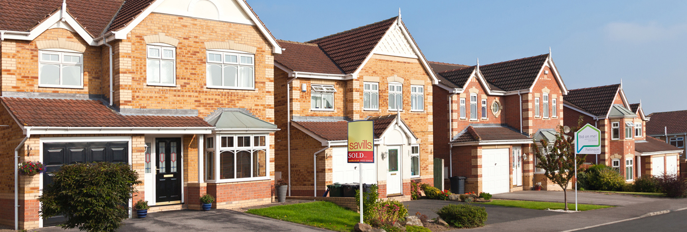
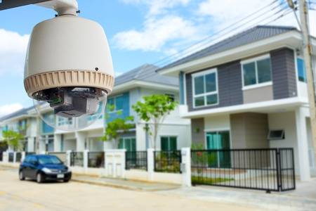

Kamery na osiedlu
Bezpieczeństwo i zaufanie wzgledem siebie mieszkańców
Monitoring osiedla to standard w nowoczesnych obiektach, które powstały w ostatnich latach. Coraz częściej jest on także stosowany w okolicy starszych zabudowań – zarówno samych bloków czy domów, jak i placów zabaw oraz parkingów. Telewizja przemysłowa w takim miejscu zapewnia bezpieczeństwo mieszkańcom i ich mieniu, zmniejszając ilość aktów wandalizmu oraz kradzieży.
- Ochrona i zaufanie mieszkańców
- Zabezpieczenie mienia mieszkanców
- Zwiększona wartość gruntów
Zestaw x4
kamer hybrydowych + rejestrator
od 899.79 zł
- 4x kamera hybrydowa
- Rejestrator
- Przewód do kamery 10m + wtyki
- zasilacze zbiorcze do kamer
- Naklejki "obiekt pod nadzorem"
- Ubezpieczona przesyłka
Zaptaj o oferte
Zestaw x8
kamer hybrydowych + rejestrator
od 1749.99 zł
- 8x kamera hybrydowa
- Rejestrator
- Przewód do kamery 10m + wtyki
- zasilacze zbiorcze do kamer
- Naklejki "obiekt pod nadzorem"
- Ubezpieczona przesyłka
Zaptaj o oferte
Zestaw x16
kamer IP + rejestrator
od 2899.99 zł
- 16x kamera
- Rejestrator
- Przewód do kamery 10m + wtyki
- zasilacze zbiorcze do kamer
- Naklejki "obiekt pod nadzorem"
- Ubezpieczona przesyłka
Zaptaj o oferte
Zestaw x16+
kamer rejestrator
od 3329.99 zł
- 16 lub więcej kamer
- Rejestrator
- Przewód do kamery 10m + wtyki
- zasilacze zbiorcze do kamer
- Naklejki "obiekt pod nadzorem"
- Ubezpieczona przesyłka
Zaptaj o oferte
Monitoring osiedla może powstać z inicjatywy deweloperów, firm budowlanych, spółdzielni mieszkaniowej oraz wspólnoty osób, zamieszkałych na danym terenie. Poszczególne kamery mogą zostać zamontowane przy wejściach do klatek i piwnic, na placach zabaw i parkingach, a także w podziemnych garażach. Są one dostosowane do monitorowania jak największej przestrzeni, zapewniając bezpieczeństwo i porządek na osiedlu oraz zapobiegając czynom karalnym. Telewizja przemysłowa może działać z użyciem światłowodu lub bezprzewodowo – w miejscach, gdzie nie ma możliwością doprowadzenia kabli. Jej administrator ma możliwość podglądu na żywo, który ułatwia szybką reakcję w przypadku jakichkolwiek niebezpiecznych sytuacji.
Dobór zestawu
Instalacja monitoringu na terenie osiedla wymaga więcej technicznych rozwiązań. Oczywiście jest to zależne od wielkości osiedla, ilości mieszkańców oraz stopnia zabezpieczenia (integracja z innymi systemami zabezpieczeń). Standardowy system dla osiedla może składać się z kilkunastu do nawet kilkudziesięciu kamer, z tego względu należy wykonać dokładny projekt instalacji z uwzględnieniem:
- ilość kamer, instalacja kamer w terenie
- dobór rejestratora kompatybilnego z kamerami
- dobór odpowiedniego okablowania (dostosowanego do warunków zewnętrznych)
- sposób przesyłu danych - systemy sieciowe lub analogowe, systemy przewodowe oraz bezprzewodowe
- metody zarządzania systemem, a także konfiguracji oraz możliwości prowadzenia zdalnego monitoringu
- przyszła rozbudowa systemu oraz integracja z innymi systemami zabezpieczeń
- miejsce instalacji urządzeń, uwzględnienie kąta widzenia kamer, zmieniających się warunków świetlnych (kompozycja światła, intensywność) oraz pracy w nocy

Co zyskujesz wraz ze sprawnie dzialającą instalacją?
Ochrona
System monitoringu pozwoli Ci w odpowiedni sposób ochronić swój dobytek oraz bliskich. Właściwie rozlokowane i skonfigurowane kamery umożliwiają szybkie wykrycie ewentualnego włamania ,kradzieży czy kolizji z innym samochodem oraz podjęcie natychmiastowych kroków, które pozwolą zmniejszyć straty badz ustalic szybko sprawce. Dodatkowo w wielu przypadkach już sama obecność kamer sprawia, że przestępcy odstępują od zamiaru włamania w obawie przed tym, że zostaną zarejestrowani.
Kontrola
W każdej chwili możesz sprawdzić co dzieje się w poszczególnych segmentach osiedla. Dzięki urządzeniom wysokiej jakości bez problemu rozpoznasz osoby bądz wyczytasz tablice rejestracyjne osób podejrzanych . Inteligentne funkcje nowoczesnych kamer w szybkim czasie alarmują o wykryciu nowego obiektu na objętym dozorem wizyjnym obszarze, dzięki czemu juz w kilka chwil po pojawieniu się nowej osoby możemy skontrolować kim ona jest.
Oszczędność
Zakup i instalacja urządzeń systemu monitoringu nie jest już tak dużym wydatkiem jak jeszcze kilkanaście lat temu. Rozwój technologii z zakresu kameringu analogowego i IP sprawia, że oferowane obecnie systemy są nie tylko coraz bardziej niezawodne, ale również ich cena znacząco spadła. Inwestycja w taką instalację w perspektywie lat nie jest dużym wydatkiem, a pozwala uchronić przed znacznie większymi kosztami z jakimi wiąże się konieczność naprawienia strat poniesionych w wyniku kradzieży lub włamania czy ucieczki po dokonanej kolizji. Na rynku dostępne są urządzenia, które przy swej znakomitej jakości nie są kosztowne.
Wygoda
Nowoczesny kamering to wygoda i funkcjonalność, dzięki którym twoje codzienne życie stanie się prostsze. Kamery ułatwiają wiele wykonywanych każdego dnia czynności - od tych najbardziej prozaicznych jak sprawdzenie czy brama wjazdowa została zamknięta, po te najbardziej kluczowe jak np. wygodne dozorowanie dziecka bawiącego się na podwórku lub placu zabaw.
Dowód
W razie włamania na posesję badz ewentualnej stłuczki materiał z kamer zapisany na dysku rejestratora stanowi idealny dowód w sprawie. Wysokorozdzielcze kamery z dużym prawdopodobieństwem pozwolą zidentyfikować włamywaczy i udowodnić im ich czyny. Kamery są również nieocenione przy wyjaśnieniu mniejszych konfliktów, jak np. spór o zarysowanie samochodu przez sąsiada czy straty spowodowane w ogródku przez psa znajomych. Niewątpliwie obecność kamer w zasięgu nieprzyjemnego zdarzenia ułatwia dochodzenie swoich praw. Pozwala to na zaoszczędzenie nerwów oraz daje realne szanse na odzyskanie skradzionych przedmiotów.